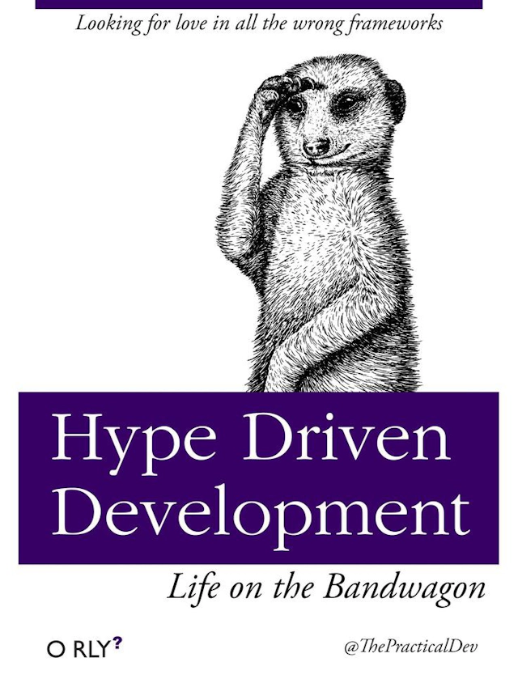

Brains Are Beautiful Liars
>>> x = []
>>> x.append(x)
>>> x
[[...]]
>>> x in x
True
>>> x[0] is x
True
>>> x = []
>>> x.append(x)
>>> x
[[...]]
>>> x in x
True
>>> x[0] is x
True
Metacognition
Learning About Learning
Thinking About Thinking
Metacognition
I am a learner, a dabbler, and a hobbyist
Python teacher and PSF CoC WG alumnus
Thinking about
teaching,
learning,
language,
intent,
and perspectives
Naming things
Mental models
Cognitive biases
Iterating on your beliefs
Cognitive dissonance
Admitting your flaws
#PythonOddity
Quirks within our mental model of Python
Mental Models
>>> first = []
>>> second = first
>>> first.append(9)
>>> first
[9]
>>> second
[9]This mental model breaks down
>>> first = []
>>> second = first
>>> first.append(9)
>>> first
[9]
>>> second
[9]
>>>
>>> first = []
>>> second = first
>>> first.append(9)
>>> first
[9]
>>> second
[9]
>>> rows = [first]
>>> lists = rows
>>>
>>> first = []
>>> second = first
>>> first.append(9)
>>> first
[9]
>>> second
[9]
>>> rows = [first]
>>>
“All models are wrong,
but some models are useful.”— George E. P. Box

© 2024 Akiyoshi Kitaoka, used with permission
#7c7c7c
“All models are wrong,
but some models are useful.”— George E. P. Box
“Each model is more useful for some purposes than others”— me
Patterns are great
Shortcuts are great
Heuristics are great
Cognitive Biases
Amos Tversky & Daniel Kahneman
Confirmation Bias
Validating your current assumptions
Anchoring Bias
Anchoring Bias
“Can you get this done in 13 weeks?”
“Yes. This should take about 8 weeks.”
“I expect this to take 1 week. What do you think?”
“No way. More like 4 weeks.”
Bandwagon Effect
bandwagon.js
etc.
Thinking Fast and Slow
By Daniel Kahneman
System 1
(Fast Thinking)
System 2
(Slow Thinking)
Recognize Your Biases
Bias Blind Spot
Imposter Syndrome
Flow State
Mindfulness
Naming Things
Linguistic Relativism
Words Matter
Iterating


Blocked Versus Interleaved Practice
“Now I must update all my curriculum”
The Options
- Immediately fix the problem
- Deny that there's a problem
- Appreciate the status quo while noting the problem
I may not be where I imagine,
but I am making progress.
“The world can be both bad and better.”
False Dilemma
“My abilities can be both improving and have room for improvement”
“A scenario can be both okay and unideal”
I may not be where I imagine,
but I am making progress.
Django Settings Module
Chesterton's Fence
“This code is too complex”
“This shouldn't be necessary”
Defaults: Often Sensible
Custom, Cultural Norm, Personal Habit
⚠️ Implicit Judgement
🤔 Explicit Judgement
💡 Living In The Default
🎠
Meat is delicious
Suffering is bad
Moral Frameworks
Deontology: Good Actions and Bad Actions
Consequentialism: Good Outcomes and Bad Outcomes
All Actions Bundle Good and Bad
Weighing The Outcomes
Consuming meat causes suffering
Consuming meat causes pleasure
Net 😋 < Net ☹️
Individual Change < System Change
Cognitive Dissonance
Holding conflicting beliefs, values, or attitudes
Especially when values and actions are misaligned
Let's blame my default state
Remedying Cognitive Dissonance
Deny the inconsistency: "everything is fine"
Avoid the inconsistency: "Out of sight, out of mind"
Change your beliefs: downplay or add layers
Change your behavior: easier said than done
I'm Not Vegan
(yet?)
Gradual Change
No thrown vegetables?
🍅 I would have eaten them. 🥦
self
def __eq__(self, other):
if not isinstance(other, type(self)):
return NotImplemented
return self.value == other.valueThe Default: First Person (me)
“Objective”: Third-Person (Trey)
Challenging: Second-Person (you)
TODO
The Obvious
Admit you have a human brain
Give your beliefs names
Make your mental models explicit
Iterate on your beliefs
Embrace discomfort
Think outside yourself
“Explicit is better than implicit”
Visit 🔗 TODO
For more
Ask me questions about:
Python training, teaching, learning Python, anything else
Trey Hunner
Python Team Trainer
trey@PythonMorsels.com